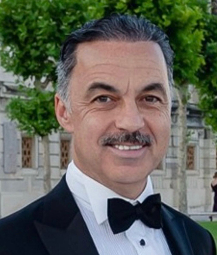
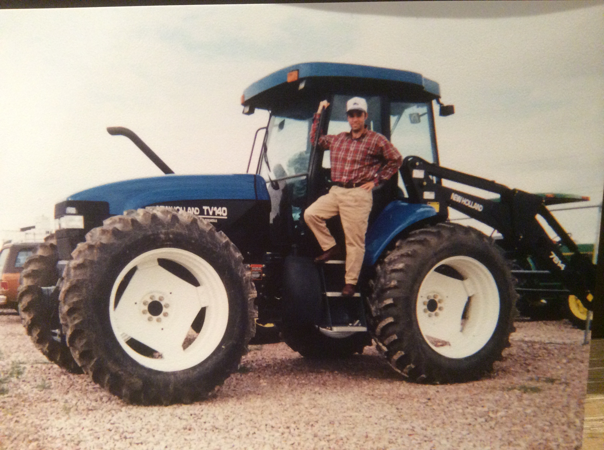
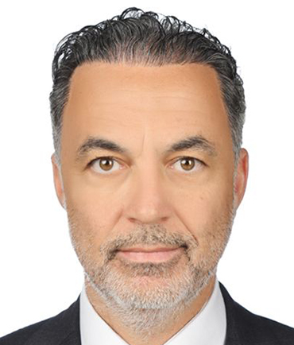
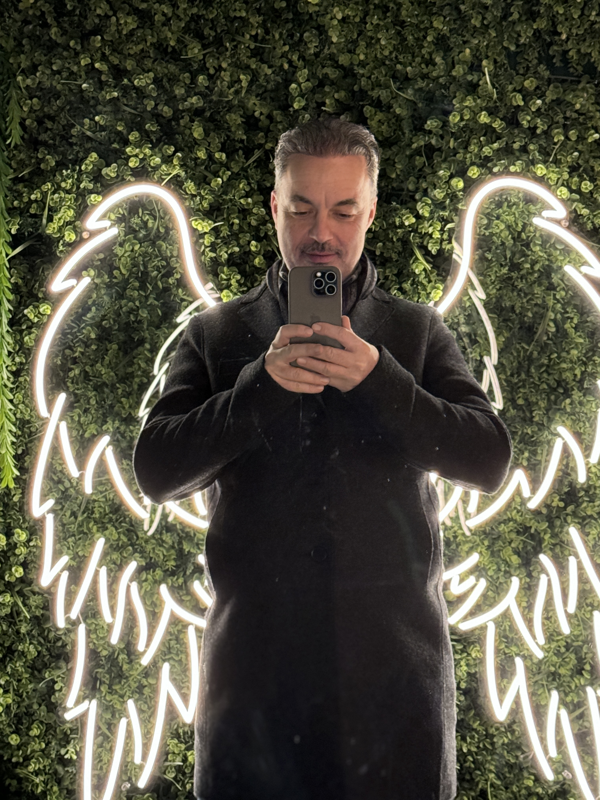

Ben, Mehmet Subaşı.
Vatansever / Bilimsever
Dijital Ekonomi sevdalısı
Vatansever / Bilimsever
Dijital Ekonomi sevdalısı


Detroit'te Ford Motor Co. şirketinde endüstri mühendisi olarak çalıştıktan sonra yönetim danışmanlığı alanına geçerek Monitor ve Bain &Co gibi konusunda dünyanın önde gelen firmalarında üst düzeyde çalışma imkanı yakaladım. Daha yirmili yaşlarımda, Boston, Milano ve Londra'da, dünyanın en büyük şirketlerinin üst düzey kadrolarına yönetim danışmanlığı alanında hizmet verdim ve şirketlerin içlerini ve üst yönetim bakış açılarını çok genç yaşımda kavrama şansı elde ettim.

Daha sonra, vatanıma dönerek dijital devrimin şirketler üzerindeki etkilerine odaklı Vodaco Pazarlama Stratejileri'ni kurdum. Aynı zamanda, Vodaco Agency olarak da servis veren dijital ajansın, ajans başkanlığını yaptım. Birçok konferans ve eğitimde; pazarlama, dijital pazarlama, online PR, internet, sosyal medya, blok zinciri (blockchain) ve finans sektörünün geleceği gibi konularda konuşmacı ve eğitmen olarak görev aldım ve yine bu konularda birçok yayına imza attım. Bilgi Üniversitesi'nde ise pazarlama konusunda öğretim üyesi görevinde bulundum.
Övünmek gibi olmasın ama Vatan partiliyim. Son yıllarda partimin neferi olarak vatanıma hizmet etmek benim için büyük bir onur kaynağı oldu. 2023 genel seçimlerinde Vatan Partisinden İstanbul Milletvekili adayı oldum. 2024 yerel seçimlerinde ise yaklaşık 15 yıldır yaşadığım ilçemde Vatan Partisi Eyüpsultan Belediye Başkan adayı oldum.
Sosyal Sorumluluklar, hayatımı zenginleştiren hobim.

Zamanın izin verdiği ve elimden geldiği kadarıyla sosyal sorumluluk projelerinde, özellikle de teknoloji ve eğitim konularına çalışmalar yapmaktayım. Bu bağlamda Türkiye Bilim Merkezleri Vakfı yönetim kurulu başkanı olarak Türkiye'de gençlere bilimi sevdirme konusuna emek harcadım. Ayrıca, Boğaziçi Üniversitesi Bilgisayar Mühendisliği bölümünde danışma kurulunda Türkiye'nin stratejik gücünü arttırmak için destek olmaya çalıştım. Birçok sivil toplum kuruluşlarında yönetim kurulu başkanlığı yanında, yönetim kurullarında da uzun seneler yer alarak çeşitli sosyal sorumluluk projelerine destek oldum. Galatasaray Klübü üyeliğimin yanında; birçok sektörel dernekte üyeliklerim çerçevesinde katkı sağlamaya çalıştım. Bilim ve eğitimin yanında; felsefe ve politik sistemler merakımı çeken konuların başında geliyor. Evli ve iki temiz kalpli çocuk babasıyım.